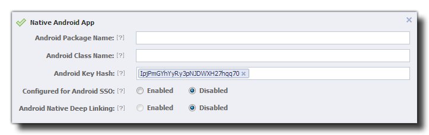

Tutorial
Page 1 of 8
Facebook Connect
This tutorial aims to explain the basic uses of some of the inlcuded Facebook functions for devices, which are:
- facebook_init()
- facebook_status()
- facebook_login()
- facebook_dialog()
- facebook_graph_request()
- facebook_logout()
Before starting this tutorial you must have a good working knowledge of GML (the GameMaker Language) and have created a "Test App" on Facebook, otherwise this
tutorial will not work correctly. To do this you must log on to your Facebook account and go to the Facebook
Developers page and click on the "Apps" section at the top.
You should then proceed to create your test app, by clicking the button marked " + Create New App".
The actual app creation process on Facebook is out of the scope of this tutorial, so it is strongly recommended that before continuing you have read all
the documentation from the Facebook Developers and have a firm understanding of
the facebook graphs, friends lists and wall functions. It is important that you also realise that the Facebook functions for GameMaker:Studio are
also asynchronous and so the game will continue to run while waiting for user input on any Facebook dialogues or while waiting for a response
from Facebook after any request has been sent. This means you should always plan ahead and never depend on any set response at any specific time
when dealing with these functions.
Note for Android Apps
When you set up your Facebook page to accept an Android app, there are certain things that are important to note. The first thing is that the
GameMaker:Studio Android Facebook functions currently do not support Android SSO nor Android Native Deep Linking so please
leave them disabled. This also means that the Android Package Name and Android Class Name are not relevant since they are only
required fields for native linking, so they can be left blank too.
Finally there is a section where you are required to enter the Android Keystore Hash. As this is difficult to get, there is an option within the Android Preferences Tab
marked Key Hash. Pressing the button marked "Show key Hash" on that tab will generate a special security hash directly linked to your Keystore file which is what Facebook requires, so
you should generate one and then copy/paste it into the Facebook Developers page.
The image below shows how your final Facebook Android section should look:

Note for iOS Apps
The basic setup for iOS apps with the Facebook functions is the same as for Android, however there are a few key things that need to be correctly set up on the actual Facebook Developers page for your app:
- Bundle ID: Must match with the bundle ID of your game (usually of the form "com.{yourcompany}.{yourgame}").
- iPhone App Store ID: This is the Apple ID associated with your game as found on iTunes Connect for the iPhone game.
- iPad App Store ID: As above except for iPad.
- Facebook Login: GameMaker:Studio supports Single Sign-On for iOS apps, so you can enable this to allow the game to be launched from the iOS Facebook app.
- Deep Linking: This is not supported, so keep disabled.
- URL Scheme Suffix: This is not supported, so leave blank.
Note for HTML5 Apps
The HTML5 target works almost exactly the same as the other target modules, however you cannot test the functions locally, meaning that you will have to compile and upload to your server to test.
There is also one additional function that has been added to create offerwall compatability for HTML5 games that is not available for other platforms:
- facebook_launch_offerwall
Please see the manual for further details, as it is not covered in this tutorial.
Click on the Next button to go to the next page of the tutorial.